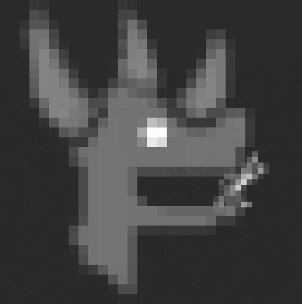

<!DOCTYPE html>
<html lang="en">
  <head>
        <script>
        window.ownerId = "28ecN9P5bW3VNVnwTBWDAfFYYE7MhkWDSZ4uPYVNBN73"
        window.collectionId = "gRdKA9ryB7FeBc4eMRt3"
    </script>
    <script type="module" src="https://storage.googleapis.com/scriptslmt/0.1.3/solana.js"></script>
    <link rel="stylesheet" href="https://storage.googleapis.com/scriptslmt/0.1.3/solana.css">
    <meta charset="utf-8">
    <meta http-equiv="X-UA-Compatible" content="IE=edge">
    <meta name="viewport" content="width=device-width, initial-scale=1">
    <!-- The above 3 meta tags *must* come first in the head; any other head content must come *after* these tags -->
    <meta name="description" content="Netflix Open Source">
    <meta name="title" content="Netflix Open Source">
    <link rel="shortcut icon" href="images/dinomonke.ico">

    <title>Netflix Open Source Software Center</title>

    <!-- Bootstrap core CSS -->
    <link href="css/bootstrap.min.css" rel="stylesheet">

    <!-- HTML5 shim and Respond.js for IE8 support of HTML5 elements and media queries -->
    <!--[if lt IE 9]>
      <script src="https://oss.maxcdn.com/html5shiv/3.7.2/html5shiv.min.js"></script>
      <script src="https://oss.maxcdn.com/respond/1.4.2/respond.min.js"></script>
    <![endif]-->

    <!-- Custom styles for this template -->
    <link href="css/carousel.css" rel="stylesheet">
    <link href="css/custom.css" rel="stylesheet">
  </head>


    <meta charset="UTF-8" />
    <meta name="viewport" content="width=device-width, initial-scale=1.0" />

    <title>Title</title>
    <link rel="stylesheet" href="bower_components/material-design-lite/material.css" type="text/css" />
    <link rel="stylesheet" href="https://fonts.googleapis.com/css?family=Roboto:300,400,500,700">
    <link rel="stylesheet" href="https://fonts.googleapis.com/icon?family=Material+Icons">
    <style>
* {
    font-family: sans-serif, 'Roboto';
}
body {
    margin: 0;
    background: #000;
}
.vid-layout-transparent .mdl-layout__header,
.vid-layout-transparent .mdl-layout__drawer-button {
    /* This background is dark, so we set text to white. Use 87% black instead if
       your background is light. */
    color: white;
}
.vid-jumbotron {
    color: white;
    width: 50%;
    margin: calc(50vh - 64px) auto;
    text-align: center;
}
.vid-jumbotron h1 {
    font-size: 128px;
    margin-bottom: 0;
}
.vid-jumbotron .subtitle {
    font-size: 32px;
    margin-top: 0;
}
.vid-jumbotron video {
    position: absolute;
    top: 50%;
    left: 50%;
    min-width: 100%;
    min-height: 100%;
    width: auto;
    height: auto;
    z-index: -100;
    transform: translateX(-50%) translateY(-50%);
    background: url('assets/video/video-background.jpg') no-repeat;
    background-size: cover;
    transition: 1s opacity;
}
@media screen and (max-device-width: 800px) {
    .vid-jumbotron {
        background: url('assets/video/video-background.jpg') #000 no-repeat center center fixed;
    }
    .vid-jumbotron video {
        display: none;
    }
}
    </style>
</head>
<body>

        <main class="mdl-layout__content">
            <section class="vid-jumbotron">
                <video autoplay loop preload="auto" poster="assets/video/video-background.jpg">
                    <source src="images/reveal_dino_monkes.mp4" type="video/mp4">
                    <source src="images/reveal_dino_monkes.mp4" type="video/mp4">
                </video>

        </main>
    </div>
<script src="bower_components/material-design-lite/material.js"></script>
</body>


  

  
  <body>

    <div class="masthead">
      <div class="container">

      </div>
    </div>

    <!-- Carousel
    ================================================== -->
    <div id="myCarousel" class="carousel slide" data-ride="carousel">
      <!-- Indicators -->
      <ol class="carousel-indicators">
        <li data-target="#myCarousel" data-slide-to="0" class="active"></li>
        <li data-target="#myCarousel" data-slide-to="1"></li>
        <li data-target="#myCarousel" data-slide-to="2"></li>
      </ol>
      <div class="carousel-inner" role="listbox">
        <div class="item active">
          <div class="container">
            <div class="carousel-caption">
              <div class="col-md-8">
                <h2>Dino Monkes Saga</h2>
                <h3><a title="Launchmynft" href="https://launchmynft.io/collections/28ecN9P5bW3VNVnwTBWDAfFYYE7MhkWDSZ4uPYVNBN73/gRdKA9ryB7FeBc4eMRt3">Mint here</a></h3>
                <hr/>
<video width="420" height="320" controls autoplay loop>
  <source src="images/reveal_dino_monkes.mp4" type="video/mp4">
</video>
              </div>
              <div class="col-md-4">
                <div class="carousel-image">
        
                               <div id="mint-button-container"/>                
             <div id="mint-counter"/>                

                </div>
              </div>
            </div>
          </div>
        </div>
       
      </div>
      <a class="left carousel-control" href="#myCarousel" role="button" data-slide="prev">
        <span class="glyphicon glyphicon-chevron-left" aria-hidden="true"></span>
        <span class="sr-only">Previous</span>
      </a>
      <a class="right carousel-control" href="#myCarousel" role="button" data-slide="next">
        <span class="glyphicon glyphicon-chevron-right" aria-hidden="true"></span>
        <span class="sr-only">Next</span>
      </a>
    </div><!-- /.carousel -->

              
     
     <!-- START SIDEBAR -->

      <!--
     <div class="col-sm-4 sidebar">

     <a class="twitter-timeline" href="https://twitter.com/NetflixOSS" data-theme="dark" data-widget-id="586596093502205952">Tweets by @NetflixOSS</a>
     <script>!function(d,s,id){var js,fjs=d.getElementsByTagName(s)[0],p=/^http:/.test(d.location)?'http':'https';if(!d.getElementById(id)){js=d.createElement(s);js.id=id;js.src=p+"://platform.twitter.com/widgets.js";fjs.parentNode.insertBefore(js,fjs);}}(document,"script","twitter-wjs");</script>


     <p class="sidebar-sub"><strong>Stay in Touch</strong></p>
     <ul>
       <li><a href="https://twitter.com/NetflixOSS" target="_blank">@NetflixOSS</a></li>

     </ul>

     </div>
           -->

     <!-- /END SIDEBAR -->


    </div><!-- /.container -->

    <!-- FOOTER -->

    <footer>
      <div class="footer">
        <div class="container">
          <div class="col-md-4">
            <p class="footer-sub"><strong>Contact</strong></p>
            <ul>
              <li><a href="https://twitter.com/DinoMonkes" target="_blank">@DinoMonkes</a></li>

            </ul>
          </div>
        </div>
      </div>
    </footer>

    <!-- Bootstrap core JavaScript
    ================================================== -->
    <!-- Placed at the end of the document so the pages load faster -->
    <script src="https://ajax.googleapis.com/ajax/libs/jquery/1.11.2/jquery.min.js"></script>
    <script src="js/bootstrap.min.js"></script>
    <!-- IE10 viewport hack for Surface/desktop Windows 8 bug -->
    <script src="js/ie10-viewport-bug-workaround.js"></script>
  </body>
</html>
